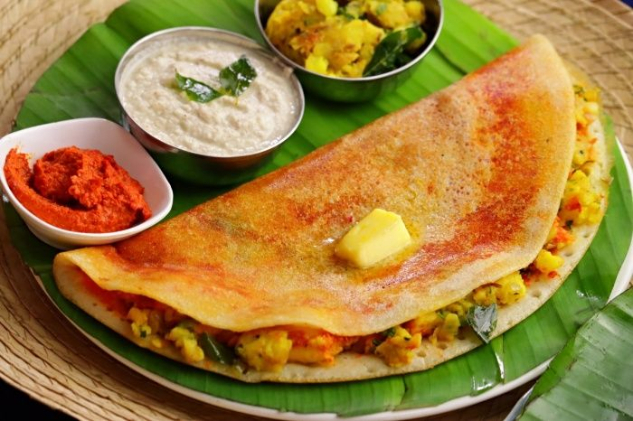

Masala Dosa

menu of Masala Dosa
To create Masala Pasta using very simple ingredients. It can be prepared in very less time. Only few minutes and it
is ready.
Here's what you need:
- 2 cups pasta
- 2 tablespoon olive oil or butter
- 1/2 teaspoon cumin seeds
- cloves garlic
- 1/3 teaspoon salt
- 1/2 tsp for boiling pasta
- 1/2 teaspoon red chili powder
- 1/2 teaspoon garam masala or pav bhaji masala or other any masala powder
- 1/2 teaspoon kasuri methi
- 2 tbsps coriander leaves
- 2 tablespoon cream as needed (optional)
- 1 large onion choped
- 2 charrots chooped
- 1/4 to 1/2 cup green peas
- 1/4 cup capsicum
- 1 cup tomatoes chopped
- Take a large pot,in a large pot,bring 6 cups of water to a boli.
- When the water begings to boli rapidly,add half teaspoon salt and pasta
- Cook till all dente on a medium to high flame.
- I suggest referring the instruction on the pack of pasta.
- And than take a pot and in pot heat 1 tablespoon oil. When the oil turns hot, add cumin.
- When they begin to spultter ,then add finely chppoed garlic.
- Fry till it begins to smell good for a minute or two
- dd onions and fry untill they turn pink.
- Then add chooped veggies and fry for about 2 minutes.
- Next mash the tomatoes well and add it to the pan along with salt.
- Cook until the tomatoes turn soft and blend well with veggies. The raw smell of tomatoes should disappear.
- Add kasuri methi,red chili powder and masala powder.
- Stir well and fry for a minute.Add cooked pasta and 1 tablespoon oil.Toss well.Adjust salt as needed.
- Add coriander leaves.If pasta looks dry,then pour 1 to 2 tablespoons pasta cooked water.
- server masala pasta hot.